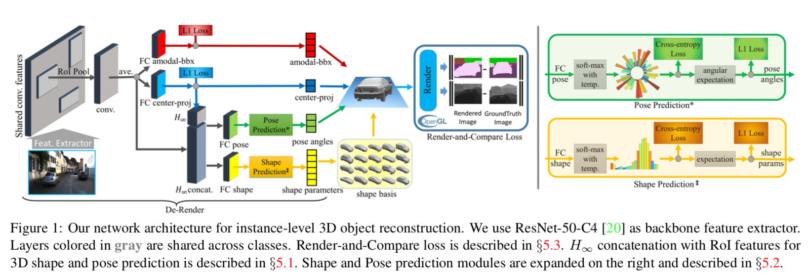
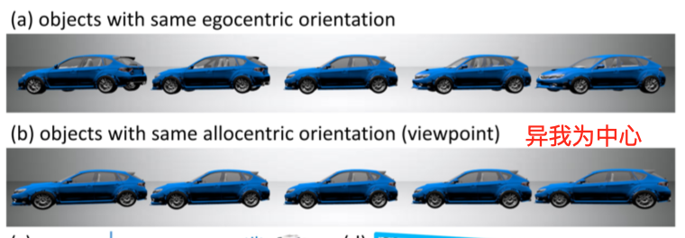
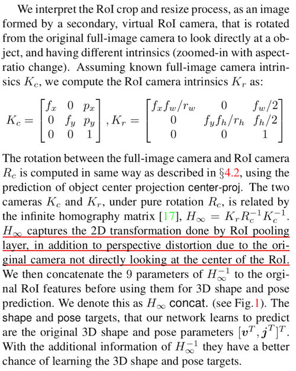
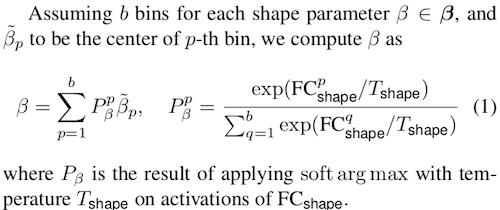

『Xu』3D-RCNN: instance-level 3D Object Reconstruction via Render-and-Compare
这篇文章主要介绍的就是如何利用单幅二维图像对物体进行三维重建。从最传统的计算机视觉算法中可以了解到通过对同一物体多个角度的拍摄图像可以进行深度的计算，并进行三维重建。但是随着深度学习的发展已经有大量的工作在做关于单幅图像的三维重建，这次提出的3D-RCNN模型就是基于Fast-RCNN开发出来的实现单幅图像的三维重建的模型。

这个模型中提出了一种表征三维物体的shape和pose的方式。将抽象的这两个特征转化为可以用参数表示。
1. 物体形状表征
作者利用了CAD中提供的大量3D模型，将每一个模型都用volumetric form表示，然后利用PCA提取出了每一类模型shape的十个基向量，利用这十个基向量构成的特征空间来表征每一类模型的shape。所以对于任意一个3D模型，其shape可以用对应类别的十个基向量的线性组合来表示，从而使3D模型的shape representation变得简单。
2. 物体姿态表征
首先作者认为物体的姿态可以有两种表示方法，一种是egocentric（以自我为中心），另一种是allocentric（以异我为中心）。从下图中可以看到在allocentric情况下，只要是allocentric的角度相同那么所获得的图像就是相同的，同时考虑到我们的重建是以图像feature为基础的，所以为了保证在面对相同的feature时得到结果的唯一性，故采用了allocentric pose。在allocenric下每个pose的表示方法为$v=[\theta, \phi, \psi]$. $\theta, \phi, \psi$代表azimuth, elevation, and tilt angles.

为了实现姿态估计，直接从单幅图像直接利用深度神经网络进行估计是ill-posed problem，原理上证明只能在很局限的条件下实现这个目的。所以作者利用神经网络预测出2D projection of the canonical object center and 2D amodal bounding box. 然后利用基础的变换就可以恢复成需要的object pose.
接下来整个网络中还有几个重要的点。
首先由于网络模型采用的是Fast-RCNN的结构，里面使用了ROI pooling的技术，目的是为了让不同size的ROI能够被normalize到一个固定的大小，从而保证之后的全联接层能够使用（因为全联接层的输入是固定的，而ROI的大小是不一样的）。也正是因为这个ROI pooling的技术，使得feature map变化了之后，对应的amodal bounding box和center projection都需要做对应的normalize，不然在原feature上的位置（box的大小）可能会与pooling后feature上的位置（大小）出现不符，例如原来的box中只有一个人，pooling之后，用同样的box可能会导致选中了多个人。而这样的normalize，可以在最后的输出阶段进行恢复。
其次，上述的normalize仅仅适用在预测amodal bounding box和center projection的时候，而对于三维空间中的shape和pose的预测则无法使用。但是在预测中同样也需要考虑进这个ROI pooling的操作带来的影响，即原文中提到的underlying 2D transformation.作者的做法就是将POI pooling看作是一种齐次变换，通过capture这个变换，用一个矩阵表示，将矩阵的参数放入feature中进行联合训练，从而提供underlying 2D transformation的信息。

同时作者还提到了，在预测pose和shape参数的时候，虽然可以直接使用回归的方法来进行预测，但是如果利用分类来做会有更好的效果，所以作者提出的预测pose和shape的loss就综合了分类以及回归。利用分类来做回归的方法就是将整个range分为多个bin，然后将输出分类到对应的bin上去，可以考虑用每个bin的中值来作为回归的结果。这一步如果采用的是最简单的做法 应该是通过argmax选择概率最大的那一个bin，然后这个bin的中值就是对应的输出值，但是由于argmax是不可微的，所以会造成求梯度时的问题，所以才用了softargmax的方法。所以采用softargmax的方法计算每个shape参数的公式如下。

其中FC层输出的应该是类似于分类网络中的logits，需要再加一层softmax来表示概率，否则会导致和不为1。
最后作者还提出了一个Render-and-Compare Loss，我认为具体的做法就是通过将上述方法得到的object的3D模型加工（Render也有加工的意思）成2D Segmentation mask/2D Depth map，然后与ground truth的2D Segmentation mask/2D Depth map计算loss，用来进一步精细化输出的结果。同时ground truth的2D Segmentation mask/2D Depth map是比较容易获得的annotation。
这篇文章主要是学姐给的科普文，读的不是很认真，上述观点也只是浅显之见。